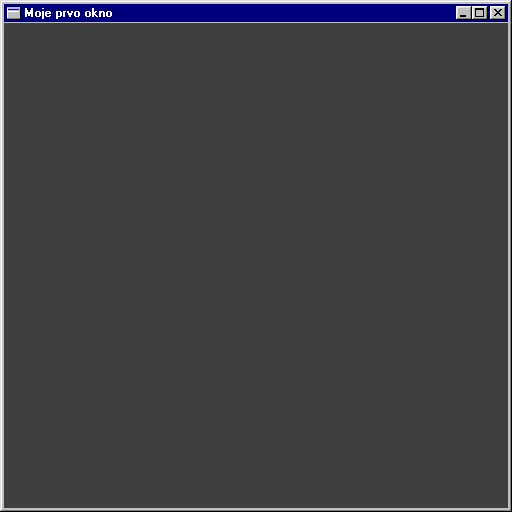

1.5.6 Konec programa
Sporočilna zanka se izvaja dokler ne naleti na sporocilo WM_QUIT. Sporočilo pomeni, da želimo koncati aplikacijo in s tem tudi naš program. Za prekinitev programa uporabimo naslednji stavek:
// koncamo izvajanje programa in vrnemo kot rezultat vrednost
// prvega parametra zadnjega sporocila
return msg.wParam
S stavkom return označimo, da želimo koncati funkcijo, vrednost msg.wParam pa predstavlja vrednost enega od parametrov zadnjega sporočila, torej sporočila WM_QUIT. Ker lahko vrednost ob sporočilu WM_QUIT nastavimo sami, si lahko s tem pomagamo, da ugotovimo zakaj se je končal naš program.
Poglejmo si sedaj naš glavni program kako izgleda v celoti (deklaracije spremenljivk, ki sem jih prej zaradi razlage pisal pri pripadajočem delu kode, sem tukaj postavil na začetek programa zaradi preglednosti):
#include <windows.h>
// deklariramo našo okensko proceduro
// implementacijo bomo napisali kasneje tukaj samo povemo da obstaja
long CALLBACK MyWndProc(HWND hWnd, UINT uMessage,
WPARAM wParam, LPARAM lParam);
int WINAPI WinMain(HINSTANCE hInstance, HINSTANCE hPrevInstance,
LPSTR lpCmdLine, int cmdShow)
{
// spremenljivka v katero si bomo shranili rocaj našega okna
HWND hWnd;
// struktura s katero bomo dololocili lastnosti našega razreda oken
WNDCLASSEX wc;
// spremenljivka v katero shranimo trenutno sporocilo
MSG msg;
// dolocimo velikost strukture
wc.cbSize = sizeof(WNDCLASSEX);
// nastavimo obnašanje okna
wc.style = CS_HREDRAW | CS_VREDRAW | CS_OWNDC;
// naslednja 2 parametra sta za dodatne informacije o stilu okna, ki jih
// ne potrebujemo, zato oba nastavimo na 0 (ignoriramo)
wc.cbClsExtra = 0;
wc.cbWndExtra = 0;
// nastavimo okensko proceduro, ki bo skrbela za obdelovanje sporocil
wc.lpfnWndProc = MyWndProc;
// rocaj aplikacije, ki je lastnik tega razreda oken
wc.hInstance = hInstance;
// barva ozadja našega okna
wc.hbrBackground = (HBRUSH)GetStockObject(DKGRAY_BRUSH);
// ikona okna v normalnem stanju
wc.hIcon = LoadIcon(NULL, IDI_APPLICATION); // dolocimo ikono programa
// ikona okna v pomanjšanem stanju
wc.hIconSm = LoadIcon(NULL, IDI_APPLICATION); // dolocimo majnso ikono
// miškin kazalec, ki ga želimo uporabljati
wc.hCursor = LoadCursor(NULL, IDC_ARROW);
// ime menija, ki ga naj ima naše okno
wc.lpszMenuName = NULL;
// našemu razredu oken dolocimo ime
wc.lpszClassName = "MojRazredOken";
// registracija našega razreda oken
RegisterClassEx(&wc);
hWnd = CreateWindowEx(
// razširjen stil okna
NULL,
// ime razreda oken, ki predstavlja osnovo tega okna
"MojRazredOken",
// ime okna (besedilo, ki se prikaže v naslovni vrstici
"Moje prvo okno",
// stil okna
WS_OVERLAPPEDWINDOW,
// x koordinata levega roba okna - uporabimo privzeto vrednost
CW_USEDEFAULT,
//y koordinata zornjega roba okna - uporabimo privzeto vrednost
CW_USEDEFAULT,
// širina okna (v pikslih)
512,
// višina okna (v pikslih)
512,
// rocaj starševsekga okna
NULL,
// rocaj menija
NULL,
// rocaj aplikacije, ki je lastnik okna
hInstance,
// kazalec na dodatne informacije
NULL);
// operacijskemu sistemu sporocimo naj prikaže okno
ShowWindow(hWnd, cmdShow);
// operacijskemu sistemu sporocimo naj izriše vsebino okna
UpdateWindow(hWnd);
// poženemo zanko s sporocili
// zanka se izvaja dokler se v vrsti ne pojavi sporocilo Quit(WM_QUIT)
while ( GetMessage(&msg, NULL, 0, 0))
{
// pretvorimo sporocilo v primernejši format
// virtualne kode tipk pretvorimo v ASCII znake
TranslateMessage(&msg);
// sporocilo pošljemo glavni okenski proceduri, da ga obdela
DispatchMessage(&msg);
}
// koncamo izvajanje programa in vrnemo kot rezultat vrednost
// prvega parametra zadnjega sporocila
return msg.wParam;
}
1.5.7 Glavna okenska procedura
Naš glavni program, ki skrbi za kreiranje in prikaz okna ter poišiljanje sporočil pravemu naslovniku, smo napisali. Manjka nam še naslovnik, ki bo ta sporočila sprejel in obdelal. To je glavna okenska procedura. Za začetek bomo napisali zelo preprosto okensko proceduro, ki se bo odzivala le na 3 sporočila, ostala pa bo predala v obdelavo operacijskemu sistemu. Naša glavna okenska procedura izgleda takole:
long CALLBACK MyWndProc(HWND hWnd, UINT uMessage,
WPARAM wParam, LPARAM lParam)
{
HDC hDC;
PAINTSTRUCT PaintStruct;
switch (uMessage)
{
// WM_CREATE – sporocilo se sproži ob kreiranju okna
{
// izvedemo inicializacijo, ki je potrebna ob kreiranju
return 0;
}
// WM_DESTROY – sporocilo oznaccje, da želi uporabnik zapreti okno
case WM_DESTROY:
{
// operacijkemu sistemu pošljemo sporocilo WM_QUIT.
PostQuitMessage(0);
return 0;
}
// WM_PAINT – sporocilo pove, da je treba osvežiti vsebino okna
case WM_PAINT:
{
// pripravimo okno za risanje
hDC = BeginPaint(hWnd,&PaintStruct);
// rišemo
// obvestimo okno, da smo koncali z risanjem
EndPaint(hWnd,&PaintStruct);
return 0;
}
default:
// neobdelana sporocila predamo v obdelavo operacijskemu sistemu
// (privzeti okenski proceduri)
return DefWindowProc(hWnd,uMessage,wParam, lParam);
}
}
Za začetek niti ni predolgo, ne?! Vsaj v primerjavi s kodo, ki smo jo potrebovali, da smo ustvarili okno. Sedaj pa si podrobneje oglejmo našo okensko proceduro. Prototip okenske procedure, s katerim se mora seveda skladati naša procedura, izgleda takole:
long CALLBACK ImeProcedure (HWND hWnd, UINT uMessage,
WPARAM wParam, LPARAM lParam)
Glavna okenska procedura kot rezultat vrača obvestilo o tem, kako se je končala obdelava sporočila. Ob uspešnoo obdelanem sporočilu se vedno vrne vrednost 0, česar smo se držali tudi v naši kodi.
Procedura ima štiri parametre: hWnd, uMessage, wParam in lParam. Njihov pomen pa je naslednji:
- hWnd. Parameter hWwd vsebuje ročaj okna s katerim je povezano sporočilo. Koristen je predvsem v primeru, ko naša aplikacija skrbi za več oken, saj lahko s pomočjo tega parametra ugotovimo kateremu oknu so namenjena sporočila.
- uMessage. Parameter vsebuje trenutno sporočilo, ki ga je potrebno obdelati.
- wParam, lParam. Ta dva parametra vsebujeta vrednosti, ki predstavljajo parametre sporočila. Če je npr. trenunto sporočilo, sporočilo, ki označuje, da se je premaknil miškin kazalec, potem parametra povesta x in y koordinato trenutne lokacije kazalca. Pomen parametrov se razlikuje glede na sporočilo.
Kot smo že večkrat ocenili je naloga okenske procedure, da pregleda sporočila in se odziva na njih. V naši okenski proceduri zaenkrat obdelujemo le 3 različna sporočila: WM_CREATE. WM_DESTROY in WM_PAINT. Poglejmo si jih natančneje:
WM_CREATE. Je sporočilo, ki ga operacijski sistem tvori ob kreiranju okna. V našem primeru se to sporočilo pošlje, ko glavni program izvede funkcijo CreateWindowEx. Ko zaznamo to sporočilo, ponavadi izvedemo kako dodatno inicializacijo, če je potrebna (npr. če bi za ozadje okna uporabljali kakšno sliko, bi ob sporočilu WM_CREATE to sliko naložili). Ker v našem primeru ne potrebujemo inicializacije, samo končamo glavno okensko proceduro.
WM_DESTROY. Sporočilo WM_DESTROY pošlje operacijski sistem, ko uporabnik želi zapreti okno. To se lahko zgodi npr., ko uporabnik stisne gumb X v naslovni vrstici zaslona ali ko v sistemskem meniju izbere možnost Close. V kodo povezano s sporočilom WM_DESTROY tako dodamo vso kodo, ki je potrebna ob zapiranju okna (recimo, če bi uporabljali za ozadje okna sliko, bi ob zapiranju okna poskrbeli, da se slika odstrani iz pomnilnika, ker je več ne potrebujemo).
Ker pa je to naše glavno okno, želimo ob zapiranu okna tudi koncati naš program. Zato kličemo v kodi funkcijo PostQuitMessage, ki v vrsto sporočil pošlje sporočilo WM_QUIT. S tem povzročimo, da se prekine sporočilna zanka našega glavnega programa in s tem tudi konča naš program. Funkciji PostQuitMessage kot parameter podamo vrednost, za katero želimo, da jo program vrne ob koncu. V našem primeru se je program končal normalno zato smo kot vrednost parametra podali 0.
WM_PAINT. Zadnje sporočilo, ki ga bomo posebej obdelali je sporočilo WM_PAINT. Do tega sporočila pride, ko postane vsebina okna neveljavna in jo je potrebno izrisati na novo. Eden od takih primerov je, ko uporabnik postavi drugo okno nad naše okno, nato pa naše okno spet pride v ospredje. Operacijski sistem si ne shrani vsebine našega okna (tega kar vidimo v oknu), temveč nam samo pošlje sporočilo o tem, da je vsebino okna treba obnoviti (izrisati na novo).
Kot vidimo imamo znotraj dela kode, namenjeni obdelavi sporočila WM_PAINT dve funkciji BeginPaint in EndPaint. Zaenkrat povejmo le to, da s prvo oknu povemo, da želimo risati vanj, z drugo pa sporočimo, da smo z risanjem končali. Funkciji BeginPaint in EndPaint si bomo podrobneje ogledali naslednjič, ko se bomo lotili tudi risanja ter si ogledali grafični sistem GDI..
Kodo, ki obdela tri sporočila za katera smo se odločili, smo pripravili, poskrbeti pa moramo še za ostala sporočila, ki jih pošlje operacijski sistem. Da ne bi ostala neobdelana, jih pošljemo tako imenovani privzeti okenski proceduri (default windows procedure). Prototip privzete okenske procedure izgleda takole:
DefWindowProc( HWND hWnd, UINT Msg,
WPARAM wParam, LPARAM lParam)
Parametri privzete okenske procedure imajo enak pomen kot pri naši okenski proceduri, zato parametre, ki jih je sprejela naša okenska procedura, kar pošljemo naprej privzeti okenski proceduri. Ta poskrbi za to, da se izvedejo dejanja, ki so za neko sporočilo določena v operacijskem sistemu. Če pogledamo naše okno, lahko spreminjamo njegovo velikost, čeprav nismo napisali nobene kode, ki bi se odzivala na kakršnokoli sporočilo povezano s tem. Za take primere poskrbi privzeta okenska procedura.
S tem ko smo sporočila, ki jih ne želimo sami obdelati, poslali privzeti okenski proceduri, smo poskrbeli za to, da naša okenska procedura preveri vsa sporočila. Ker je prav to tudi njena naloga, imamo našo okensko proceduro v celoti napisano.
1.5.8 Končno moje prvo okno
Potem, ko smo v prejšnjem poglavju sestavili še našo okensko proceduro smo zadovoljili vsem potrebam našega okna. Sedaj lahko poženemo naš program in si ogledamo rezultate našega mučenja (Slika 1.4). Morda se komu ne zdi veliko, glede na to, da smo napisali kakih 70 vrstic kode, vendarle pa se moramo zavedati, da lahko naše okno premikamo, mu spreminjamo velikost, postavimo v statusno vrstico, raztegnemo cez cel ekran, itd. Glede na funkcionalnost, ki jo ima naše okno, morda niti ni tako veliko kode. Hkrati pa imamo že vse pripravljeno, da se lahko lotimo konkretnih stvari oziroma vsebine našega okna. Pravzaprav bomo v prihodnje ves čas uporabljali isto kodo, morda s kakšno minimalno spremembo, za tvorjenje našega glavnega okna, tako da trud res ni bil zaman.

Slika 1.4: Moje prvo okno.
1.6. Za prvič bo dovolj
V članku smo spoznali, kako napišemo naš prvi okenski program, kako uporabljamo funkcije Windows API, kako ustvarimo naše prvo okno, kaj so to sporočila, itd. Skratka cel kup stvari. Za začetnike je bilo kar precej informacij, tako da boste potrebovali nekaj časa, da vse predelate, tisti ki so vam stvari že jasne, pa si privoščite zaslužen počitek. Za začetek je bilo več kot dovolj.
Naslednjič se bomo lotili uporabe vmesnika GDI (Graphics Device Interface), s katerim lahko rišemo v naše okno. Kot smo videli, smo si del kode pripravili že danes in naslednjič bomo začeli kar z razlago tega dela kode, torej z razlago funkcij BeginPaint in EndPaint.
|